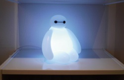
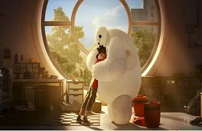
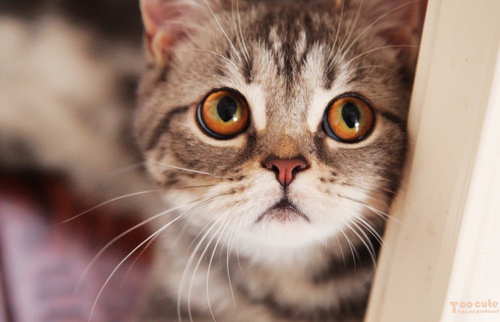
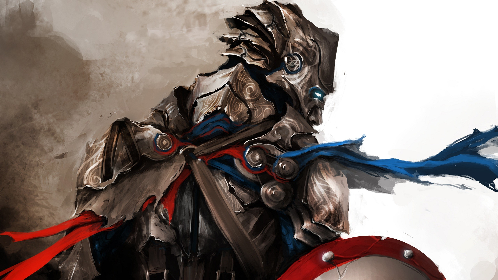

无奈之后，重拾平静
我一直都在渴望简单，越想要简单的生活，也跟随着内心做任何事，但有时并不如意，似乎简单， 已成为了“艰难”的事情，奢侈品，你能用钱买，但是奢侈的梦想，则是用钱买不到的。


2015.04.01

2015.01.13
当詹姆斯·鲍文发现一只受伤的姜黄色流浪猫，蜷缩在他家公寓的走廊里时，还不知道自己的人生将会面临怎样翻天覆地的转变。 作为一个勉强度日的流浪艺人，他从未想过拥有一只宠物。但是，詹姆斯还是决定收留这只聪明的公猫，并给他起名为鲍勃。 詹姆斯精心照顾着鲍勃，帮助他恢复健康，然后将他放回街头，准备就此分别。但鲍勃显然另有打算。

2014.10.06